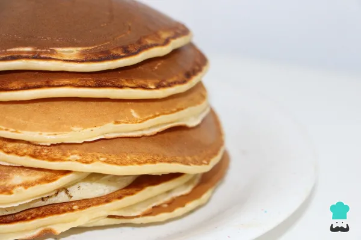

Home
Panqueques recipe

Panqueques
Son súper faciles de hacer, son superfaciles de hacer, son una receta para principiantes
Conocidos también como tortitas americanas, hotcakes, pancakes o panquecas, los panqueques son una delicia que se puede comer con dulce o con salado a cualquier hora del dia. De esta forma, si te preguntas como preparar panquques la respuesta es sencilla
Ingredients
- 1 taza de harina leudante o harina de reposteria
- 1 huevo
- 1 chorro pequeño de aceite de oliva
- 3/4 taza de leche (180 mililitros)
- Un chorro de miel
Steps
- Hacer la receta de panqueques es súper facil.Primero, reúne todos los ingredientes. Si no tienes harina leudante o preparada, que es harina de tipo trigo que ya incluye levadura(tambien se llama harina de reposteria), puedes usar de trigo normal y añadir una cucharadita de levadura química en polvo(polvo de hornear)
- Coloca la harina en un bol y añade el huevo y la leche. Mezcla bien hasta que se integren estos ingredientes y no queden casi grumos.
- Para terminar de hacer la masa de los panqueques, agrega un chorrito de aceite y mezcla bien. Verás que el aceite hace que se terminen de disolver los grumos de harina y queda una masa lisa y homogénea
- Para hacer los panqueques, calienta una sartén a fuego medio-bajocon un poquito de aceite o mantequilla.Cuando la sartén esté caliente, añáde una cucharada de mezcla y déjala al fuego hasta que empiecen a salir burbujas en la superficie, entonces dale la vuelta y cocina por el otro lado
- Para servir la receta de panqueques súper fáciles de hacer, añade un poquito de mantequilla y a disfrutar